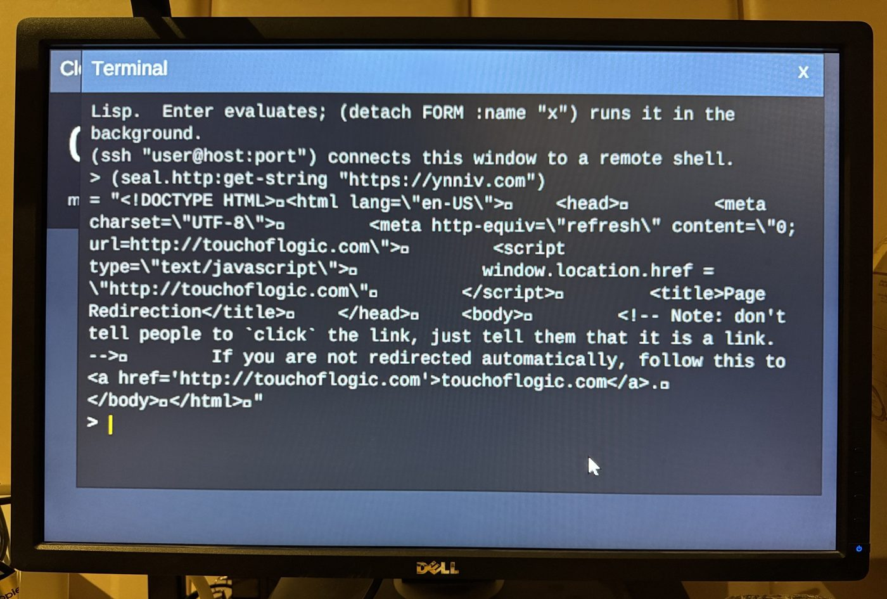

On Monday the author posted three lines: clone kiln, run
bin/kiln zero --sd-image, and dd the result to an SD card. A
Raspberry Pi Zero 2 W booted from it is a Lisp machine, with no Linux and no C under the
REPL, and the boot loader is the one stock part left. This week that machine got a core for
I/O, an SSH shell that edits lines, a clock and HTTPS. The software around it dropped its last
third-party crypto library, and its secret keys moved into memory the collector cannot reach.
The thesis behind all of it became a talk.
git clone https://github.com/modus-lisp/kiln && cd kiln
bin/kiln zero --sd-image=zero.img --ca-bundle=latest \
--owner=$npub \
--relay=wss://nos.lol \
--ssh-key=~/.ssh/id_ed25519.pub
sudo dd if=zero.img of=/dev/sdX bs=4M conv=fsync status=progress
kiln’s README puts the build at about forty minutes, with no board needed to make the image. Asked what was custom, the author listed it: custom ssh. custom shell, custom terminal, custom window manager, custom compositor, custom framebuffer, custom init, custom threads, custom runtime, custom compiler … the pi bootloader is still stock, but i’m working on it.

The Zero has four cores, and this week it stopped doing everything on one of them. Core 1 became an I/O core: one non-consing loop owns the USB controller, sees the bus as a tree with hotplug anywhere, and runs the network stack. Core 0 is the Lisp system. Work crosses between them as named jobs, run on the main thread blocking or detached. SSH became a client of the network service, with a real shell: lines edited by quill, which learned to take its keys as events pushed in rather than read from a terminal. The board sets its clock by SNTP, can send its log off-board as syslog over UDP, sizes its heap from its own RAM, and keeps a FAT32 store at the far end of its card.
kiln’s fifty commits are mostly the other side of that: pinning each piece as it landed, laying out the card’s memory so the tarballs, fonts and code window stay clear of each other, and putting the gateway on one event loop.
Until Wednesday the card’s networking leaned on ironclad, the standard third-party crypto library, through a fork that kiln could not even pin: ironclad-zero, which has no remote. WebRTC needs old algorithms, MD5 and HMAC-SHA1 for STUN and TURN, so seal gained them. natrium added SHA-1, RIPEMD-160 and SHA3-256. cl-transport’s ICE, webrtc-data, glass-webrtc and glass’s Nostr login now take their hashes, MACs and random bytes from those two. kiln’s lock is now the gateway stack without ironclad.
And the keys found a home. Two issues ago, natrium’s gossamer arena kept secrets in memory the collector never moves, on SBCL and hosted Modus, and bare metal has no backend yet. On Friday it got one. Modus reserves a static region of the board’s memory, gossamer takes its arena from there, and a restored core starts a fresh arena and a fresh random generator rather than inheriting the old ones. secp256k1-fast’s and cl-nostr’s keys now live in it on the Zero. kiln measured the cost on an emulated card: a 20-second drag drew 58 frames against 65 on the old pins, and the login message arrived at 53 seconds against 57.
Last week illatio ran DeepSeek V4 Flash on a laptop. This week the cuda
branch merged, and the DeepSeek models and GLM-5.3 Flash run on NVIDIA cards: an RTX 3090
and a Tesla P40 in a two-socket EPYC with a terabyte of memory. The README’s figures
for DeepSeek V4.1 Flash are about 20 tokens a second decoding, and a 129,211-token prompt
prefilled in six minutes, still decoding at 12 a second at that depth. GLM-5.3 Flash decodes
at about 22. V4.1 also sees pictures. They are decoded by pigment, the workspace’s own
image library, rather than by a decoder of illatio’s.
The most interesting commit is a negative result. Judgment-first pretraining asked whether a small model trained first to judge whether a story hangs together, one token of verdict per story, would absorb story structure faster than one trained on next-token prediction. The pilot’s answer, in its commit title: no arm learns the verdict; a probe says why. No arm’s held-out accuracy left 0.5. A label that is learnable through the same batches trains at once, so the pipeline is sound. A linear probe found coherence barely represented in the model at all: at this scale one token of signal per story is too thin. The experiment is written up, not buried.
The site has a talks/ directory now, with one deck in it:
Lisp-steading: staying above water when
everything is bugged or pwned, the redux of a talk at ATL BitLab. It opens with a slide of
October’s compromises: a Patch Tuesday of 1,413 flaws, an unauthenticated RCE in PHP,
a poisoned PyPI release, eight guessable CA keys. Then it makes the argument this archive has
been reporting piecemeal for eight months: every layer below you is a place to
hide.
Homesteading for computing. A stack small enough for one person to read, written in one language you can inspect while it runs.
Lisp-steading, slide 4Its three principles read like a summary of this week: fewer layers, which is ironclad leaving the card; one language, from the boot vector to the browser engine; and outside judges, every claim checked by something you didn’t write. That last one is the suite of a thousand ELK layouts, the ANSI suite, ds4’s reference numbers, and the reason this archive quotes commits rather than summarising them.
cl-deposits’ 61 commits are a red team at work. Its chaos log records
attacks it found against its own confiscation lottery, among them a colluding majority whose
lottery includes its own colluders, so nobody claims. The fixes land as provisional
rulings, collected in a new REVIEW.md to wait for review rather than being
declared settled. glass’s terminal got a portable core that writes to any byte
sink, draws only changed cells, and promises what xterm-256color’s terminfo
promises. operandi-gui shows reasoning and tool calls as one record, and reconnects
after a dropped link. fs-fat reads and writes a volume through functions, so a card is
just another block device.
Nothing to report: 63 repositories, 43 green, none failing, 20 without a workflow, the same as a week ago. kiln’s image, which last week’s lock fix turned green, has stayed green through fifty more commits.